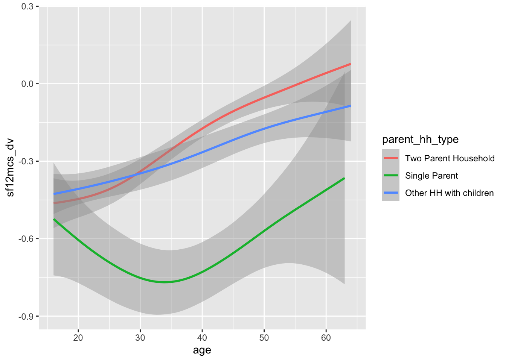
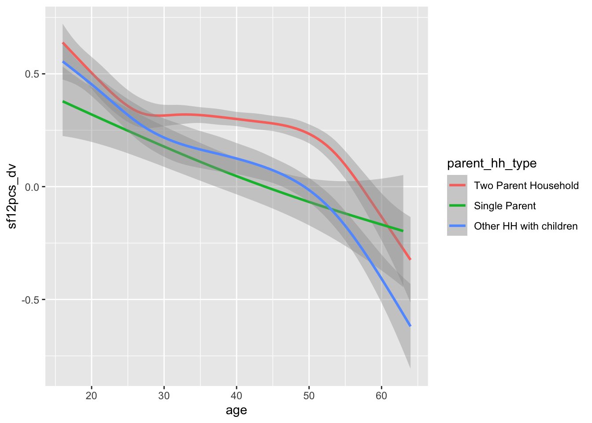

Introduction The UK has comparatively high rates of working age economic inactivity (EI) due to poor health.
Methods This paper uses a novel modelling framework, and data from the UKHLS, to estimate how much of this health-related EI (HREI) may be ‘due to’ i) poor general health directly. We modelled the individual transition probabilities between seven economic (in)activity states for a broadly representative population from the UKHLS observed pre-pandemic, who were between 16 and 64 years of age when interviewed. We projected how many move between states both under observed circumstances and in a scenario where an adverse driver was fully or largely mitigated, and compared how many more or fewer people were in the economically inactive long term sick state in both scenarios. From this we were able to produce estimates of the amount of HREI that may be ‘explained by’ these specific drivers.
Findings …
Discussion …
Key Findings/Contributions
To add
Introduction
For working-age people, being employed or retired is associated with relatively good health, while being unemployment and long-term sickness) are associated with relatively poor health. Other economic states occupy an intermediate position. There is evidence to say that good quality work (e.g. insecure, high job-strain) is beneficial for health. There is also evidence that unemployment itself increases the risk of poor health (especially poor mental health) and premature mortality, rather than bad health being part of a broader selection effect.
From a policy perspective, there has been long-standing interest in increasing the share of the population in paid employment, and lowering the proportion who are unemployed, long-term sick and looking after home and family. Measures to achieve this have usually focused on moving people out of the detrimental states, rather than preventing them moving into them in the first place. They have tended to focus on the sub-groups of the population in these states and claiming out-of-work benefits. The policy mix has included public employment support, increased conditionality (including sanctions and changes to benefit eligibility) as well as increasing the financial support for working. In addition, some policies have provided financial help to meet the costs of working (e.g. childcare, Access to Work). While the overall approach has moved some people into work, it also appears to have pushed others into long-term sickness and other forms of economic inactivity.
Structure
We model the baseline distribution of the sample population (adults aged 16-64 in wave J of the UKHLS) at wave T+1, across seven economic categories, based on their age, sex and economic status at wave T. (The model itself used data from all waves a-j of the UKHLS).
Next, we examined how this distribution might change in response to different health scenarios compared to this baseline.
The first part of the results section considers how the whole sample population distribution might change as a result of:
i) ‘turning off’ limiting long-term illness; and
ii) improving the combined scores for physical and mental health by one standardised unit overall, weighted either towards physical health, mental health, or equally by physical and mental health.
The second part of the results section will consider how these projections differ by a) males and females; b) younger and older persons of working age; and c) household composition, with an emphasis on identifying any additional barriers out of economic inactivity and into employment for single parents.
Methods
The data
The data used to fit the models are all observations from wave a to j of the UKHLS, excluding observations where data was missing on any of the predictor and outcome variables.
The seven economic categories are:
Two economically active states
Employed
Unemployed
Five economically inactive states:
Student
Full-time carer
Long-term sick
Retired
Other
Foundational Model
The foundational model specification aims to adequately control for the effects that age, current state and sex have on transition probabilities between states. To recap, we know the following:
That state at time T influences state at time T+1, including that there is path dependence.
That transition propensities between states vary systematically by sex (in particular regarding the long-term carer state)
That transitions between states vary by age, but in different ways for different states, and in ways that aren’t linear with age.
The foundational model specification operationalises the above knowledge as follows:
i.e. that next state \(S_{T+1}\) is predicted on the current state \(S_T\), sex (the \(male\) term so female is the reference category), the interaction of current state and sex \(S_T * male\) , and a flexible function of age \(bspline(x, 5)\) .
The model is implemented using the multinom function of the nnet package as follows
Exposure models extend the foundation with one or more additional variables. These variables are the exposures of interest, and for which we want to estimate the influence on economic activity levels and flows.
For a single exposure \(Z\), the equation simply extends the foundational model specification as follows:
In some cases (as with estimating the effects of health as an exposure) interaction terms are included between exposure variables as well. The decision about whether to include such interactions is made based on both our understanding of the extent to which factors are likely to interact in practice, and the penalised model fit as assessed using metrics like AIC and BIC.
The simulation
We create scenarios where adverse drivers are either, i) as observed or ii) ‘turned off’, and compare the proportion of people estimated to be in each economic (in)activity state between scenarios, in order to produce estimates of how much of HREI is ‘due to’ the driver/exposure of interest.
Results
Part 1 of the results section explores the relationship between health and economic inactivity using all valid observations from the last pre-pandemic wave of the UKHLS (wave j).
In part 1.1 this question is operationalised by using a discrete health variable, LLTI, which is as observed in the baseline scenario and ‘switched off’ for everyone in the counterfactual. In part 1.2 the question is operationalised using two continuous health variables, the MH and PH components of the SF-12 instrument, which are standardised, and treated as measures of a single underling ‘health’ factor. For counterfactual estimation, five different scenarios are explored, in which ‘health’ overall has been improved for each individual by one standardised unit, but the relative weight of MH and PH to this improvement is varied.
In part 2 of the results section, the best performing scenario from part 1.2 is applied to different demographic subgroups within the UKHLS wave J sample. In part 2.1 these subgroups are i) males and females; and ii) younger and older adults of working age. In part 2.2 we ask the question, “To what extent do the effects of health on economic (in)activity apply similarly to parents i) in two parent households; and ii) in one parent households?”
Part one: Effects of discrete and continuous health outcomes on populations in general
Modelling discrete health state (LLTI/No LLTI), people aged 16-64
In each wave of the UKHLS, respondents are asked the following question
Do you have any long-standing physical or mental impairment, illness or disability? By ‘long-standing’ I mean anything that has troubled you over a period of at least 12 months or that is likely to trouble you over a period of at least 12 months.
In the baseline scenario, the observed values of this binary variable, llti are applied to a model which includes llti as an exposure. For the counterfactual scenario, llti is ’switched off` for all observations.
Code
devtools::load_all(here::here('R'))library(tidyverse)# library(haven)# library(here)library(nnet)# devtools::load_all(here('R'))# base_dir_location <- "big_data/UKDA-6614-stata/stata/stata13_se/ukhls"# indresp_files <- dir(here(base_dir_location), pattern = "[a-z]_indresp.dta", full.names = TRUE)varnames <-c("jbstat", "dvage", "sex", "health" )vartypes <-c("labels", "values", "labels", "labels" )df_ind_llti <-get_ind_level_vars_for_selected_waves(varnames = varnames, vartypes = vartypes, waves = letters[1:11])# Clean the data df_ind_llti_standardised <- df_ind_llti |># dvage uses negative values to indicate missing. The code below explicitly turns them all to missing valuesmutate(across(dvage, function(x) ifelse(x <0, NA, x))) |># This renames dvage to agerename(age = dvage) |>filter(between(age, 16, 64)) |>mutate(lt_condition =case_when( health %in%c("No", "no") ~FALSE, health %in%c("Yes", "yes") ~TRUE,TRUE~NA_integer_ ) |>as.logical() ) %>%filter(complete.cases(.))
econ_cat_levels <-c("Employed", "Unemployed", "Inactive student", "Inactive care", "Inactive long term sick", "Inactive retired", "Inactive other")df_ind_ltcondition_wave_j_baseline <- df_ind_llti_standardised |>filter(!is.na(lt_condition)) |>filter(wave =='j')df_ind_ltcondition_wave_j_counterfactual <- df_ind_ltcondition_wave_j_baseline |>mutate(lt_condition =FALSE)preds_baseline <-predict(mod_llti, newdata = df_ind_ltcondition_wave_j_baseline, type ="probs")preds_counterfactual <-predict(mod_llti, newdata = df_ind_ltcondition_wave_j_counterfactual, type ="probs")predictions_summary_matrix <-cbind(# The number 2 indicates do the sum function for each column.# If it were 1 then this would sum for each row (which should add up to 1 in call cases)apply(preds_baseline, 2, sum),apply(preds_counterfactual, 2, sum))colnames(predictions_summary_matrix) <-c("baseline", "counterfactual")predictions_summary_matrix <-cbind(# The number 2 indicates do the sum function for each column.# If it were 1 then this would sum for each row (which should add up to 1 in call cases)apply(preds_baseline, 2, function(x) round(sum(x), 0)),apply(preds_counterfactual, 2, function(x) round(sum(x), 0)))colnames(predictions_summary_matrix) <-c("base", "counterfactual")tbl_mod_llti <- predictions_summary_matrix |>as.data.frame() |>rownames_to_column(var ="State") |>mutate(State =factor( State, ordered =TRUE, levels = econ_cat_levels ) ) |>arrange(State) |>mutate(`Absolute Change`= counterfactual - base,`Relative Change`=`Absolute Change`/ base ) |>mutate(`Relative Change`=ifelse(`Relative Change`>0, glue::glue("{round(100 * `Relative Change`, 1)}% up" ), glue::glue("{round(-100 * `Relative Change`, 1)}% down") ) )tbl_mod_llti |> knitr::kable()
Table 1: Estimated effect of Limiting Long-term Illnesses (LLTI) on Economic (In)activity states
State
base
counterfactual
Absolute Change
Relative Change
Employed
15481
15764
283
1.8% up
Unemployed
1041
1097
56
5.4% up
Inactive student
1256
1267
11
0.9% up
Inactive care
1103
1198
95
8.6% up
Inactive long term sick
920
366
-554
60.2% down
Inactive retired
1437
1544
107
7.4% up
Inactive other
137
139
2
1.5% up
Table 1 indicates that, if everyone with a LLTI ceased to have one, the proportion of the population who are inactive for reasons of long-term sickness would be reduced by 60%. The proportion of the population in each of the other states, both economically inactive and active, would then increase. This includes a predicted 5.4% increase in unemployment, an 8.6% increase in long-term carers, and a 7.4% increase in those of working age who retire.
The finding that removing LLTI would greatly decrease the economically inactive long-term sick population should, of course, not be surprising. We can interpret these results, broadly, as suggesting that the majority of inactivity due to long-term sickness is caused by LLTI. We might in fact consider the 40% or so who remain in this category even in a scenario in which no one has LLTI to be more surprising.
Modelling continuous health effects, people aged 16-64
The effect of suboptimal health as an exposure was assessed using SF-12 scores, subdivided into the physical health (PH) and mental health (MH) subdomains, and then standardised over the observed population to have a mean of 0 and standard deviation of 1.
Four different exposure model specifications were considered:
mod_mh: MH only
mod_ph: PH only
mod_ph_mh: MH and PH as independent effects
mod_phmh: MH and PH including an interaction term
Each of these was compared for penalised model fit against the foundational model specification using AIC and BIC, with lower scores preferred. (1 = most preferred; 5 = least preferred)
Table 2: AIC and BIC for different model specifications for including health as an exposure
model
df
AIC
BIC
aic_rank
bic_rank
mod_00
126
249265.2
250588.8
5
5
mod_ph
132
245398.4
246785.1
3
3
mod_mh
132
247752.0
249138.7
4
4
mod_ph_mh
138
243527.6
244977.3
2
2
mod_phmh
144
243420.4
244933.1
1
1
Table 2 shows that the specification with an interaction between MH and PH is preferred by both AIC and BIC. Of models including only MH or PH, the model specification for PH is preferred.
Based on this, we will consider the following scenarios, each with the best performing model, mod_phmh:
Scenario 1: Mental health only is improved (but physical health is unchanged)
Scenario 2: Physical health only is improved (but mental health is unchanged)
Scenario 3: Both mental health and physical health are changed by equal amounts
Scenario 4: Both mental health and physical health are changed, but mental health is changed more.
Scenario 5: Both mental health and physical health are changed, but physical health is changed more.
These scenarios are represented graphically in Figure 1. All interventions on the unit circle (grey curve) represent equal change over both dimensions, but the scenarios differ in terms of how the two components, mental health and physical health, contribute to the overall health change.1
Code
library(geomtextpath)pos_y <-function(x) {sqrt(1- x^2)}x =seq(0, 1, by =0.001)dta <-tibble(x = x) |>mutate(y =pos_y(x) )dta |>ggplot(aes(x = x, y = y)) +geom_line(color ="grey") +coord_equal() +labs(x ="Physical Health (Standardised)",y ="Mental Health (Standardised)",title ="Health improvement scenarios modelled") +theme_minimal() +annotate("point", x =1, y =0) +annotate("point", x =0, y =1) +annotate("point", x =1/sqrt(2), y =1/sqrt(2)) +annotate("point", x =2/sqrt(5), y =1/sqrt(5)) +annotate("point", x =1/sqrt(5), y =2/sqrt(5)) +geom_textcurve(data =data.frame(x =0, y =0, xend =0, yend =1), mapping =aes(x, y, xend = xend, yend = yend), label ="S1: MH Only", curvature =0, hjust =0.5, arrow =arrow(),vjust =0.5 ) +geom_textcurve(data =data.frame(x =0, y =0, xend =1, yend =0), mapping =aes(x, y, xend = xend, yend = yend), label ="S2: PH Only", curvature =0, hjust =0.5, arrow =arrow(),vjust =0.5 ) +geom_textcurve(data =data.frame(x =0, y =0, xend =1/sqrt(2), yend =1/sqrt(2)), mapping =aes(x, y, xend = xend, yend = yend), label ="S3: Equal Gain", curvature =0, hjust =0.5, arrow =arrow(),vjust =0.5 ) +geom_textcurve(data =data.frame(x =0, y =0, yend =2/sqrt(5), xend =1/sqrt(5)), mapping =aes(x, y, xend = xend, yend = yend), label ="S4: MH Bias", curvature =0, hjust =0.5, arrow =arrow(),vjust =0.5 ) +geom_textcurve(data =data.frame(x =0, y =0, yend =1/sqrt(5), xend =2/sqrt(5)), mapping =aes(x, y, xend = xend, yend = yend), label ="S5: PH Bias", curvature =0, hjust =0.5, arrow =arrow(),vjust =0.5 )
Figure 1: Schematic representation of continuous health improvement scenarios modelled
Table 3 shows the estimated effects of the five scenarios modelled on the size of the seven economic activity subpopulations. Further details, including absolute subpopulation sizes and differences between baseline and counterfactual scenarios, are shown in Appendix B.
Table 3: estimates of substantially improving health under five different scenarios
Scenarios
State
(1) MH Only
(2) PH Only
(3) Both Equal
(4) Both - MH Bias
(5) Both - PH Bias
Active
Employed
1.4% up
2.5% up
2.5% up
2.2% up
2.7% up
Unemployed
12.1% down
15.3% down
18.5% down
17% down
18.3% down
Inactive
Student
0.6% up
4.8% up
4.6% up
3.4% down
5.2% up
Carer
1% up
4.3% down
2.1% down
0.8% down
3.2% down
Long-term sick
15.8% down
26.1% down
29.9% down
26.1% down
30.5% down
Retired
2.3% up
0.6% down
2.2% up
2.6% up
1.3% up
Other
9.4% down
3.9% down
10.2% down
10.9% down
8.6% down
Table 3 shows that all scenarios reduce the share of the population who are inactive long-term sick (from between 15.8% to 30.%) and unemployment (from between 12.1% to 18.3%). Reductions in long-term sick and unemployment were largest in Scenario 5 (Both improved, but improvements biased towards physical health). All the scenarios saw increases in the share of people in employment, and all-but-one showed increases in the share of people who are full time students.
The impact on the number of people economically inactive with caring responsibilities and the number early retired was more mixed:
Most scenarios reduced the share of people inactive due to full time caring responsibilities (from between 0.8% to 4.3% down depending on scenario), though in Scenario 1 the share of people in this category was increased slightly (1% up).
Most scenarios increased the share of people in early retirement (between 1.3% up and 2.6% up), though in Scenario 2 there was a small decrease in this share (0.6% down).
Note that some of these relative changes are based on comparatively few observations. Further details are presented in Appendix B.
Summary of part one
In part one, we have shown modelled estimates of the expected change to economic inactivity due to long-term sickness, and other (in)activity states, for both (i) a discrete health variable (presence or absence of a LLTI); and (ii) a continuous health quantity (SF-12, based on the MH and PH subcomponents).
For the discrete health variable, LLTI, we modelled the effect of ‘switching off’ LLTI for everyone. For the continuous measures, we considered five scenarios in which health was improved by an equal total amount, but with a different split between the MH and PH components.
In part two, we will explore whether the findings from part one are similar across: a) males and females; b) younger and older working age adults; c) parents with dependent children, whether in single parent or two parent households. This will help determine how generalisable the findings of health effects above are to different types of individual and household.
Part two: Effects of discrete and continuous changes to health in distinct subpopulations
In part two of this paper, we explore whether these estimates which apply to the general population are similar in distinct subpopulations. Our subpopulations of interest are:
Males and females
Older and younger working age populations
Household types, focusing on households with children, and within this single parent households
If there are substantive differences between the estimated effects of poor health in these subpopulations, then it suggests additional influencers and drivers may need to be considered, and also that the effects of improving health on improving labour market outcomes will not be felt equally in all subpopulations.
For each subpopulation we model the effect of the health change scenario which was associated with the greatest relative change in sickness-related economic inactivity and unemployment, namely scenario 5: the scenario in which MH and PH are both improved, but PH is improved twice as much as MH. This represents the most ‘efficient’ change to health, in terms of the expected outcomes, of those scenarios considered.
The overall results in terms of predicted relative change to each economic (in)activity population size is shown in Table 4. Further details are shown in appendix C.
Table 4: Estimates of the preferred health improvement scenario on changing economic (in)activity pool sizes in distinct subpopulations
Overall
By Sex
By Age Group
State
Whole Population
Males only
Females only
16-44 years old
45-64 years old
Active
Employed
2.7% up
2.3% up
2.9% up
2.3% up
3% up
Unemployed
18.3% down
18.4% down
18.2% down
21.2% down
14.1% down
Inactive
Student
5.2% up
5.9% up
2.7% up
5.1% up
11.8% up
Carer
3.2% down
1.6% down
3.2% down
4.2% down
1.9% down
Long-term sick
30.5% down
29.6% down
31.1% down
33.8% down
29.3% down
Retired
1.3% up
1.2% up
1.3% up
No change
1.3% up
Other
8.6% down
8.2% down
7.7% down
11.1% down
4.7% down
Table 4 indicates that, generally, the influence of health on economic inactivity, and employment, does not appear to vary substantially by either sex or broad age group. There are indications that the effect of improving poor health on unemployment may be greater in younger (16-44 years of age) rather than older (45 to 64 years of age) working age populations, but not by sex, and the direction and magnitude of effects are similar in all cases.
Some of the relative changes are based on small numbers and absolute changes. For example, the influence of being a student in older working age populations, and of early retirement in younger working age populations. Improving health is projected to reduce the number of economically inactive full-time carers both more in relative and absolute terms for females than males, and for younger adults than older adults.
More detailed results, including absolute numbers and changes, are presented in appendix C.
In the next subsection, we will apply the same modelling framework to a specific subpopulation: parents. Within this subsection, we will compare the effects of health in both i) single-parent households; and ii) two-parent households.
Differences by parent household composition
So far, we have looked at all working age adults, and the effects of health in their economic (in)activity status. In this section, we instead focus just on parents with dependent children, as this may affect the extent to which health influence employment, unemployment, and inactivity.
Within the population of parents, we then look further at the effect of being either a single parent, or a parent in a two parent household. This involves developing specific models, based around the general framework used above, that differ slightly in terms of the data used (because only parents are in the sample frame), and the covariates used. Further information about the models considered and used to produce summary estimates of the effect of health on economic (in)activity are shown in appendix D.
When applying the modelling framework to parental households only, we included covariates indicating whether a parent was a single parent rather than a parent in a couple. We also considered interaction terms between parent type and either i) health
Summary of part two
The impact of improving health had a similar effect on reducing the size of the inactive long-term sick population and unemployed populations. However there were some differences by subpopulations in terms of relative changes in other economic activity states.
For sex differences:
Improving health had a larger effect in women in reducing the size of the economically inactive carer population.
For age differences:
Improving health may lead to a greater relative reduction in the unemployed population for younger adults, and a greater increase in the relative size of the employed population for older adults.
For households with children, and single parents and couples within this group:
A simpler but well performing model specification incorporating household type did not indicate substantive differences between single parents and couples with children in the effect of health
However a more complex model with demographic interactions suggested there may be differences in how health affects economic (in)activity. In particular, there may be a larger relative impact on employment for single parents than parents in a couple, and larger relative reductions in inactive care populations in working age parents in a couple.
Overall, despite considering many different model specifications and ways of operationalising the questions, we did not tend to see substantive differences in terms of how much a substantial improvement in overall health (biased towards physical health) would lead to decreases in economic inactivity due to long-term sickness, decreases in unemployment, and increases in employment rates.
This suggests, subject to the modelling assumptions, that improving health is likely to lead to similar patterns of labour market (re)engagement across the working age population.
Discussion
Strengths
Very generalisable and adaptable framework for potentially considering many drivers both individually and in combination.
Makes use of a large and complex dataset which was initially broadly representative of the UK population.
UKHLS has both strengths in following individuals and households over time. But on the other hand there is selective retention from wave to wave, so the study sample may become less representative of the general population over time.
Particular strength is the longitudinal nature of the study. This was essential for allowing transitions at individual level to be modelled, as a first stage to producing estimates of the effects of drivers on the overall populations
Comparison with other findings
We haven’t looked yet. A priority to focus on?
Limitations/Caveats
We aren’t capturing uncertainty (i) where there are few observations (ii) representativeness of the sample (including sub-groups) (iii) multiplication of uncertainty - more variables, more biased data (iv) computations stop at 100 runs…we could do more for a more precise model.
Implications
Research
As more variables are included in a model, there is less complete data available to populate the models. This may bias the results. We could look at methods such as multiple imputation to attempt to reduce this source of bias.
We can attempt to make the results more representative of specific within-UK populations, such as those more representative of Scotland, Northern Ireland, or Wales. Different UK nations differ in terms of their demographic and socioeconomic characteristics and so the same exposures are likely to have different effects in different parts of the UK.
We can also use the modelling framework to consider the effect that ageing populations alone will likely have on the proportion of the working age population who are economically active and inactive in different ways.
We can also use the framework to project the effect that modest but sustained interventions on drivers may have over multiple years.
Will link geographic drivers to provide broader upstream context to movements into and out of different economic (in)activity states.
Practice
These estimates attempt to quantify the amount of HREI ‘explained by’ specific drivers, based on a PAF-style framing of the questions. This is equivalent to asking what the effect of fully mitigating any driver would be on the population as a whole. However the effectiveness of any real-world intervention is likely to be less, as no adverse driver/exposure is likely to be fully mitigated. As such these estimates likely give an upper bound to the effect of any real-world intervention.
References
Appendices
Appendix A: Methodsy Stuff
Methodsy Stuff Will go here to avoid confusing and boring the reader.
Appendix B: Detailed results of the five scenarios modelled for the effects of a substantial improvement in health
This appendix presents more detailed tables and results for the effect of substantial changes in health, and how much these improvements are biased towards either physical health or mental health gains. The scenarios modelled are as described in Figure 1.
Scenario 1: Improving mental health only
Table 5 shows the predicted effects on the number of people in each economic category of increasing each individual’s mental health by a substantial amount, one standard deviation. The baseline model shows the distribution of the population aged 25-64 before health was improved; the counterfactual shows it after health was improved. The results are based on UKHLS participants for whom relevant information was observed in wave j, the last pre-COVID wave in the dataset.
Code
econ_cat_levels <-c("Employed", "Unemployed", "Inactive student", "Inactive care", "Inactive long term sick", "Inactive retired", "Inactive other")df_baseline <- ind_data_standardised |>filter(wave =='j')df_counterfactual <- df_baseline |>mutate(sf12mcs_dv = sf12mcs_dv +1)preds_df_baseline <-predict(mod_phmh, newdata = df_baseline, type ="probs")preds_df_counterfactual <-predict(mod_phmh, newdata = df_counterfactual, type ="probs")predictions_summary_matrix <-cbind(# The number 2 indicates do the sum function for each column.# If it were 1 then this would sum for each row (which should add up to 1 in call cases)apply(preds_df_baseline, 2, function(x) round(sum(x), 0)),apply(preds_df_counterfactual, 2, function(x) round(sum(x), 0)))colnames(predictions_summary_matrix) <-c("base", "counterfactual")tbl_mod_mh <- predictions_summary_matrix |>as.data.frame() |>rownames_to_column(var ="State") |>mutate(State =factor( State, ordered =TRUE, levels = econ_cat_levels ) ) |>arrange(State) |>mutate(`Absolute Change`= counterfactual - base,`Relative Change`=`Absolute Change`/ base ) |>mutate(`Relative Change`=ifelse(`Relative Change`>0, glue::glue("{round(100 * `Relative Change`, 1)}% up" ), glue::glue("{round(-100 * `Relative Change`, 1)}% down") ) )tbl_mod_mh |> knitr::kable()
Table 5: Estimates of substantially improving Mental Health
State
base
counterfactual
Absolute Change
Relative Change
Employed
14812
15023
211
1.4% up
Unemployed
972
854
-118
12.1% down
Inactive student
1186
1193
7
0.6% up
Inactive care
975
985
10
1% up
Inactive long term sick
830
699
-131
15.8% down
Inactive retired
1392
1424
32
2.3% up
Inactive other
128
116
-12
9.4% down
In this scenario, in which mental health was improved but physical health unaffected, unemployment is projected to fall by 12%, and economic inactivity due to long-term sickness by almost 16%. Small relative (but large absolute) increases in Employment are projected too, along with a small increase in early retirement.
Scenario 2: Improving physical health only
Table 6 shows the estimated impact on state sizes of substantially improving PH. As with the MH intervention scenarios, in the counterfactual scenario PH scores were improved by one standardised unit for all valid wave J observations. The model mod_ph_mh was used for this scenario calculation.
Code
econ_cat_levels <-c("Employed", "Unemployed", "Inactive student", "Inactive care", "Inactive long term sick", "Inactive retired", "Inactive other")df_baseline <- ind_data_standardised |>filter(wave =='j')df_counterfactual <- df_baseline |>mutate(sf12pcs_dv = sf12pcs_dv +1)preds_df_baseline <-predict(mod_phmh, newdata = df_baseline, type ="probs")preds_df_counterfactual <-predict(mod_phmh, newdata = df_counterfactual, type ="probs")predictions_summary_matrix <-cbind(# The number 2 indicates do the sum function for each column.# If it were 1 then this would sum for each row (which should add up to 1 in call cases)apply(preds_df_baseline, 2, function(x) round(sum(x), 0)),apply(preds_df_counterfactual, 2, function(x) round(sum(x), 0)))colnames(predictions_summary_matrix) <-c("base", "counterfactual")tbl_mod_ph <- predictions_summary_matrix |>as.data.frame() |>rownames_to_column(var ="State") |>mutate(State =factor( State, ordered =TRUE, levels = econ_cat_levels ) ) |>arrange(State) |>mutate(`Absolute Change`= counterfactual - base,`Relative Change`=`Absolute Change`/ base ) |>mutate(`Relative Change`=ifelse(`Relative Change`>0, glue::glue("{round(100 * `Relative Change`, 1)}% up" ), glue::glue("{round(-100 * `Relative Change`, 1)}% down") ) )tbl_mod_ph |> knitr::kable()
Table 6: Estimates of substantially improving Physical Health
State
base
counterfactual
Absolute Change
Relative Change
Employed
14812
15175
363
2.5% up
Unemployed
972
823
-149
15.3% down
Inactive student
1186
1243
57
4.8% up
Inactive care
975
933
-42
4.3% down
Inactive long term sick
830
613
-217
26.1% down
Inactive retired
1392
1384
-8
0.6% down
Inactive other
128
123
-5
3.9% down
In this scenario, economic inactivity due to long-term sickess is projected to fall by 26%, and unemployment by 15%. A 2.5% increase in employment - due largely to transfers from unemployment and long-term sickness - is also project. Unlike
Comparing Table 6 with Table 5 we can see that a hypothetical intervention purely on physical health is therefore likely to lead to a larger effect on those economic categories of most interest than an equivalently sized intervention on mental health only.
Scenario 3: Improving mental and physical health by equal amounts
The results of running this scenario are shown in Table 7
Code
econ_cat_levels <-c("Employed", "Unemployed", "Inactive student", "Inactive care", "Inactive long term sick", "Inactive retired", "Inactive other")df_baseline <- ind_data_standardised |>filter(wave =='j')df_counterfactual <- df_baseline |>mutate(sf12mcs_dv = sf12mcs_dv +1/sqrt(2),sf12pcs_dv = sf12pcs_dv +1/sqrt(2) )preds_df_baseline <-predict(mod_phmh, newdata = df_baseline, type ="probs")preds_df_counterfactual <-predict(mod_phmh, newdata = df_counterfactual, type ="probs")predictions_summary_matrix <-cbind(# The number 2 indicates do the sum function for each column.# If it were 1 then this would sum for each row (which should add up to 1 in call cases)apply(preds_df_baseline, 2, function(x) round(sum(x), 0)),apply(preds_df_counterfactual, 2, function(x) round(sum(x), 0)))colnames(predictions_summary_matrix) <-c("base", "counterfactual")tbl_mod_both <- predictions_summary_matrix |>as.data.frame() |>rownames_to_column(var ="State") |>mutate(State =factor( State, ordered =TRUE, levels = econ_cat_levels ) ) |>arrange(State) |>mutate(`Absolute Change`= counterfactual - base,`Relative Change`=`Absolute Change`/ base ) |>mutate(`Relative Change`=ifelse(`Relative Change`>0, glue::glue("{round(100 * `Relative Change`, 1)}% up" ), glue::glue("{round(-100 * `Relative Change`, 1)}% down") ) )kbl_health <- tbl_mod_both |> knitr::kable()# save_kable(kbl_health, file = here::here("presentations/health_table.html"))kbl_health
Table 7: Estimates of substantially improving health via equal improvements in mental health and physical health
State
base
counterfactual
Absolute Change
Relative Change
Employed
14812
15186
374
2.5% up
Unemployed
972
792
-180
18.5% down
Inactive student
1186
1241
55
4.6% up
Inactive care
975
955
-20
2.1% down
Inactive long term sick
830
582
-248
29.9% down
Inactive retired
1392
1422
30
2.2% up
Inactive other
128
115
-13
10.2% down
Table 7 suggests that, if mental and physical health were intervened on equally effectively, then a near 30% fall in inactivity due to long-term sickness is projected to result, as well as an 18.5% fall in unemployment. As with Table 6 and Table 5, the majority of the reduction in these categories is projected to translate into increased in the number of people in employment. Inactivity due to full time study and early retirement are also project to increase, but by more modest amounts.
Comparing Table 7 with Table 6, which had the larger of the two single component intervention scenarios on economic inactivity due to long-term sickness, we can see that, at 30%, the projected effect of intervening on both mental and physical health equally is slightly larger than the 26% relative change projected in the physical health only scenario.
Scenario 4: Both MH and PH improved, but MH changed more
In this scenario, both MH and PHS are affected, but the size of the change in MH is modelled to be twice as large as the effect on PH. The results are shown in Table 8
Code
econ_cat_levels <-c("Employed", "Unemployed", "Inactive student", "Inactive care", "Inactive long term sick", "Inactive retired", "Inactive other")df_baseline <- ind_data_standardised |>filter(wave =='j')df_counterfactual <- df_baseline |>mutate(sf12mcs_dv = sf12mcs_dv +2/sqrt(5),sf12pcs_dv = sf12pcs_dv +1/sqrt(5) )preds_df_baseline <-predict(mod_phmh, newdata = df_baseline, type ="probs")preds_df_counterfactual <-predict(mod_phmh, newdata = df_counterfactual, type ="probs")predictions_summary_matrix <-cbind(# The number 2 indicates do the sum function for each column.# If it were 1 then this would sum for each row (which should add up to 1 in call cases)apply(preds_df_baseline, 2, function(x) round(sum(x), 0)),apply(preds_df_counterfactual, 2, function(x) round(sum(x), 0)))colnames(predictions_summary_matrix) <-c("base", "counterfactual")tbl_mod_both <- predictions_summary_matrix |>as.data.frame() |>rownames_to_column(var ="State") |>mutate(State =factor( State, ordered =TRUE, levels = econ_cat_levels ) ) |>arrange(State) |>mutate(`Absolute Change`= counterfactual - base,`Relative Change`=`Absolute Change`/ base ) |>mutate(`Relative Change`=ifelse(`Relative Change`>0, glue::glue("{round(100 * `Relative Change`, 1)}% up" ), glue::glue("{round(-100 * `Relative Change`, 1)}% down") ) )kbl_health_mhbias <- tbl_mod_both |> knitr::kable()# save_kable(kbl_health, file = here::here("presentations/health_table.html"))kbl_health_mhbias
Table 8: Estimates of substantially improving health via disproprtionate improvement in mental health
State
base
counterfactual
Absolute Change
Relative Change
Employed
14812
15139
327
2.2% up
Unemployed
972
807
-165
17% down
Inactive student
1186
1226
40
3.4% up
Inactive care
975
967
-8
0.8% down
Inactive long term sick
830
613
-217
26.1% down
Inactive retired
1392
1428
36
2.6% up
Inactive other
128
114
-14
10.9% down
Table 8 projects a fall in economic inactivity due to long-term sickness of around 26%, which is similar to the effect of scenario 2, as shown in Table 6.
Scenario 5: Health improved, but PH improved more
In this scenario, both MH and PH are changed, but the change in PH modelled to be twice as large as for MH. The projections are shown in Table 9.
Code
econ_cat_levels <-c("Employed", "Unemployed", "Inactive student", "Inactive care", "Inactive long term sick", "Inactive retired", "Inactive other")df_baseline <- ind_data_standardised |>filter(wave =='j')df_counterfactual <- df_baseline |>mutate(sf12mcs_dv = sf12mcs_dv +1/sqrt(5),sf12pcs_dv = sf12pcs_dv +2/sqrt(5) )preds_df_baseline <-predict(mod_phmh, newdata = df_baseline, type ="probs")preds_df_counterfactual <-predict(mod_phmh, newdata = df_counterfactual, type ="probs")predictions_summary_matrix <-cbind(# The number 2 indicates do the sum function for each column.# If it were 1 then this would sum for each row (which should add up to 1 in call cases)apply(preds_df_baseline, 2, function(x) round(sum(x), 0)),apply(preds_df_counterfactual, 2, function(x) round(sum(x), 0)))colnames(predictions_summary_matrix) <-c("base", "counterfactual")tbl_mod_both <- predictions_summary_matrix |>as.data.frame() |>rownames_to_column(var ="State") |>mutate(State =factor( State, ordered =TRUE, levels = econ_cat_levels ) ) |>arrange(State) |>mutate(`Absolute Change`= counterfactual - base,`Relative Change`=`Absolute Change`/ base ) |>mutate(`Relative Change`=ifelse(`Relative Change`>0, glue::glue("{round(100 * `Relative Change`, 1)}% up" ), glue::glue("{round(-100 * `Relative Change`, 1)}% down") ) )kbl_health_phbias <- tbl_mod_both |> knitr::kable()# save_kable(kbl_health, file = here::here("presentations/health_table.html"))kbl_health_phbias
Table 9: Estimates of substantially improving health via disproprtionate improvement in physical health
State
base
counterfactual
Absolute Change
Relative Change
Employed
14812
15205
393
2.7% up
Unemployed
972
794
-178
18.3% down
Inactive student
1186
1248
62
5.2% up
Inactive care
975
944
-31
3.2% down
Inactive long term sick
830
577
-253
30.5% down
Inactive retired
1392
1410
18
1.3% up
Inactive other
128
117
-11
8.6% down
Table 9 shows that, in this scenario, a 30.5% reduction in inactivity due to long-term sickness is projected to result. This is slightly larger than the previous maximum relative reduction in this category, of 29.9%, but not appreciably so.
Appendix C: Population subgroups
Differences by sex
We consider two approaches to looking at differences by sex in the effects of changing health as per scenario 5:
Running the models separately for the observed male and female subpopulations in wave J of the UKHLS.
Using all observations in the UKHLS, but artificially ‘changing’ the sex of the observations to male or female for all observations.
The first approach has the advantage of only using real data, but reduced the number of observations in each subpopulation group; the second approach uses the same number of observations for both subpopulations, but relies more heavily on the assumptions built into the best-fitting model.
The projected results based on approach i) are shown in Table 10, and the projected results based on approach ii) are shown in Table 11.
Code
econ_cat_levels <-c("Employed", "Unemployed", "Inactive student", "Inactive care", "Inactive long term sick", "Inactive retired", "Inactive other")df_baseline_females <- ind_data_standardised |>filter( wave =="j", sex =="female" )df_baseline_males <- ind_data_standardised |>filter( wave =="j", sex =="male" )df_counter_females <- df_baseline_females |>mutate(sf12mcs_dv = sf12mcs_dv +1/sqrt(5),sf12pcs_dv = sf12pcs_dv +2/sqrt(5) ) df_counter_males <- df_baseline_males |>mutate(sf12mcs_dv = sf12mcs_dv +1/sqrt(5),sf12pcs_dv = sf12pcs_dv +2/sqrt(5) ) preds_df_base_females <-predict(mod_phmh, newdata = df_baseline_females, type ="probs")preds_df_base_males <-predict(mod_phmh, newdata = df_baseline_males, type ="probs")preds_df_counter_females <-predict(mod_phmh, newdata = df_counter_females, type ="probs")preds_df_counter_males <-predict(mod_phmh, newdata = df_counter_males, type ="probs")predictions_summary_matrix_females <-cbind(# The number 2 indicates do the sum function for each column.# If it were 1 then this would sum for each row (which should add up to 1 in call cases)apply(preds_df_base_females, 2, function(x) round(sum(x), 0)),apply(preds_df_counter_females, 2, function(x) round(sum(x), 0)))colnames(predictions_summary_matrix_females) <-c("base", "counterfactual")tbl_mod_females <- predictions_summary_matrix_females |>as.data.frame() |>rownames_to_column(var ="State") |>mutate(State =factor( State, ordered =TRUE, levels = econ_cat_levels ) ) |>arrange(State) |>mutate(`Absolute Change`= counterfactual - base,`Relative Change`=`Absolute Change`/ base ) |>mutate(`Relative Change`=ifelse(`Relative Change`>0, glue::glue("{round(100 * `Relative Change`, 1)}% up" ), glue::glue("{round(-100 * `Relative Change`, 1)}% down") ) )predictions_summary_matrix_males <-cbind(# The number 2 indicates do the sum function for each column.# If it were 1 then this would sum for each row (which should add up to 1 in call cases)apply(preds_df_base_males, 2, function(x) round(sum(x), 0)),apply(preds_df_counter_males, 2, function(x) round(sum(x), 0)))colnames(predictions_summary_matrix_males) <-c("base", "counterfactual")tbl_mod_males <- predictions_summary_matrix_males |>as.data.frame() |>rownames_to_column(var ="State") |>mutate(State =factor( State, ordered =TRUE, levels = econ_cat_levels ) ) |>arrange(State) |>mutate(`Absolute Change`= counterfactual - base,`Relative Change`=`Absolute Change`/ base ) |>mutate(`Relative Change`=ifelse(`Relative Change`>0, glue::glue("{round(100 * `Relative Change`, 1)}% up" ), glue::glue("{round(-100 * `Relative Change`, 1)}% down") ) )kbl_health_phbias_females <- tbl_mod_females |> knitr::kable()# save_kable(kbl_health, file = here::here("presentations/health_table.html"))kbl_health_phbias_males <- tbl_mod_males |> knitr::kable()kbl_health_phbias_femaleskbl_health_phbias_males
Table 10: Differences in effects of improving health (biased towards physical health improvements) from observed male and female populations
(a) Females
State
base
counterfactual
Absolute Change
Relative Change
Employed
8038
8275
237
2.9% up
Unemployed
499
408
-91
18.2% down
Inactive student
696
729
33
4.7% up
Inactive care
910
881
-29
3.2% down
Inactive long term sick
492
339
-153
31.1% down
Inactive retired
799
809
10
1.3% up
Inactive other
78
72
-6
7.7% down
(b) Males
State
base
counterfactual
Absolute Change
Relative Change
Employed
6774
6930
156
2.3% up
Unemployed
473
386
-87
18.4% down
Inactive student
490
519
29
5.9% up
Inactive care
64
63
-1
1.6% down
Inactive long term sick
338
238
-100
29.6% down
Inactive retired
593
600
7
1.2% up
Inactive other
49
45
-4
8.2% down
Overall, there appear to be few substantive differences between males and females, in terms of the relative effects of this optimal health improvement scenario on the changing size of the economic (in)activity states. The model is not currently set up to determine if the differences observed are statistically significant, as they do not include credible intervals. But substantively, all relatively effects appear to be quite similar. The possible exception to this is the relative change to the size of the inactive care category, which is 3.2% down for females, and 1.6% down for males. However there are very few males observed in this category, and the 1.6% estimate is based on only one male fewer in the counterfactual than the baseline inactive care pool.
The equivalent results using the more model-based approach is shown in Table 11
Code
econ_cat_levels <-c("Employed", "Unemployed", "Inactive student", "Inactive care", "Inactive long term sick", "Inactive retired", "Inactive other")df_baseline_females <- ind_data_standardised |>filter( wave =="j" ) |>mutate(sex ="female")df_baseline_males <- ind_data_standardised |>filter( wave =="j" ) |>mutate(sex ="male")df_counter_females <- df_baseline_females |>mutate(sf12mcs_dv = sf12mcs_dv +1/sqrt(5),sf12pcs_dv = sf12pcs_dv +2/sqrt(5) ) df_counter_males <- df_baseline_males |>mutate(sf12mcs_dv = sf12mcs_dv +1/sqrt(5),sf12pcs_dv = sf12pcs_dv +2/sqrt(5) ) preds_df_base_females <-predict(mod_phmh, newdata = df_baseline_females, type ="probs")preds_df_base_males <-predict(mod_phmh, newdata = df_baseline_males, type ="probs")preds_df_counter_females <-predict(mod_phmh, newdata = df_counter_females, type ="probs")preds_df_counter_males <-predict(mod_phmh, newdata = df_counter_males, type ="probs")predictions_summary_matrix_females <-cbind(# The number 2 indicates do the sum function for each column.# If it were 1 then this would sum for each row (which should add up to 1 in call cases)apply(preds_df_base_females, 2, function(x) round(sum(x), 0)),apply(preds_df_counter_females, 2, function(x) round(sum(x), 0)))colnames(predictions_summary_matrix_females) <-c("base", "counterfactual")tbl_mod_females <- predictions_summary_matrix_females |>as.data.frame() |>rownames_to_column(var ="State") |>mutate(State =factor( State, ordered =TRUE, levels = econ_cat_levels ) ) |>arrange(State) |>mutate(`Absolute Change`= counterfactual - base,`Relative Change`=`Absolute Change`/ base ) |>mutate(`Relative Change`=ifelse(`Relative Change`>0, glue::glue("{round(100 * `Relative Change`, 1)}% up" ), glue::glue("{round(-100 * `Relative Change`, 1)}% down") ) )predictions_summary_matrix_males <-cbind(# The number 2 indicates do the sum function for each column.# If it were 1 then this would sum for each row (which should add up to 1 in call cases)apply(preds_df_base_males, 2, function(x) round(sum(x), 0)),apply(preds_df_counter_males, 2, function(x) round(sum(x), 0)))colnames(predictions_summary_matrix_males) <-c("base", "counterfactual")tbl_mod_males <- predictions_summary_matrix_males |>as.data.frame() |>rownames_to_column(var ="State") |>mutate(State =factor( State, ordered =TRUE, levels = econ_cat_levels ) ) |>arrange(State) |>mutate(`Absolute Change`= counterfactual - base,`Relative Change`=`Absolute Change`/ base ) |>mutate(`Relative Change`=ifelse(`Relative Change`>0, glue::glue("{round(100 * `Relative Change`, 1)}% up" ), glue::glue("{round(-100 * `Relative Change`, 1)}% down") ) )kbl_health_phbias_females <- tbl_mod_females |> knitr::kable()# save_kable(kbl_health, file = here::here("presentations/health_table.html"))kbl_health_phbias_males <- tbl_mod_males |> knitr::kable()kbl_health_phbias_femaleskbl_health_phbias_males
Table 11: Differences in effects of improving health (biased towards physical health improvements) from observed male and female populations (modelled approach)
(a) Females
State
base
counterfactual
Absolute Change
Relative Change
Employed
14709
15103
394
2.7% up
Unemployed
840
683
-157
18.7% down
Inactive student
1217
1278
61
5% up
Inactive care
1185
1137
-48
4.1% down
Inactive long term sick
798
545
-253
31.7% down
Inactive retired
1416
1430
14
1% up
Inactive other
129
117
-12
9.3% down
(b) Males
State
base
counterfactual
Absolute Change
Relative Change
Employed
14945
15341
396
2.6% up
Unemployed
1206
990
-216
17.9% down
Inactive student
1143
1210
67
5.9% up
Inactive care
599
590
-9
1.5% down
Inactive long term sick
876
623
-253
28.9% down
Inactive retired
1358
1380
22
1.6% up
Inactive other
167
159
-8
4.8% down
In general both approaches lead to substantively similar estimates of the effects of the health improvement scenario. In both men and women substantive improvements in employment, unemployment, and inactive long-term sick are observed, and estimated to be of similar magnitudes. When using the more model-based approach, the differences in the effects on inactive care are even greater by sex, being estimated to lead to a 4.1% decline for females and 1.5% decline for males. Other than this, the estimated effects are very similar by both sex, and the estimation approach used.
Overall, we can conclude that there appear not to be substantive differences by sex in terms of the effect of improving health on labour market participation and economic (in)activity. This suggests that an effective health intervention is likely to have similar effects on improving these economic outcomes for both males and females.
Differences by age group
For looking at differences by age group, we use the equivalent of approach i) only. This is because we have sizeable subpopulations in both working age age groups considered, and because age is itself likely to influence both mental health and physical health. The results of running this subgroup analysis, splitting the observed population in wave J into the two broad age groups, is shown in Table 12
Code
econ_cat_levels <-c("Employed", "Unemployed", "Inactive student", "Inactive care", "Inactive long term sick", "Inactive retired", "Inactive other")df_baseline_younger <- ind_data_standardised |>filter( wave =="j",between(age, 16, 44) )df_baseline_older <- ind_data_standardised |>filter( wave =="j",between(age, 45, 64) )df_counter_younger <- df_baseline_younger |>mutate(sf12mcs_dv = sf12mcs_dv +1/sqrt(5),sf12pcs_dv = sf12pcs_dv +2/sqrt(5) ) df_counter_older <- df_baseline_older |>mutate(sf12mcs_dv = sf12mcs_dv +1/sqrt(5),sf12pcs_dv = sf12pcs_dv +2/sqrt(5) ) preds_df_base_younger <-predict(mod_phmh, newdata = df_baseline_younger, type ="probs")preds_df_base_older <-predict(mod_phmh, newdata = df_baseline_older, type ="probs")preds_df_counter_younger <-predict(mod_phmh, newdata = df_counter_younger, type ="probs")preds_df_counter_older <-predict(mod_phmh, newdata = df_counter_older, type ="probs")predictions_summary_matrix_younger <-cbind(# The number 2 indicates do the sum function for each column.# If it were 1 then this would sum for each row (which should add up to 1 in call cases)apply(preds_df_base_younger, 2, function(x) round(sum(x), 0)),apply(preds_df_counter_younger, 2, function(x) round(sum(x), 0)))colnames(predictions_summary_matrix_younger) <-c("base", "counterfactual")tbl_mod_younger <- predictions_summary_matrix_younger |>as.data.frame() |>rownames_to_column(var ="State") |>mutate(State =factor( State, ordered =TRUE, levels = econ_cat_levels ) ) |>arrange(State) |>mutate(`Absolute Change`= counterfactual - base,`Relative Change`=`Absolute Change`/ base ) |>mutate(`Relative Change`=ifelse(`Relative Change`>0, glue::glue("{round(100 * `Relative Change`, 1)}% up" ), glue::glue("{round(-100 * `Relative Change`, 1)}% down") ) )predictions_summary_matrix_older <-cbind(# The number 2 indicates do the sum function for each column.# If it were 1 then this would sum for each row (which should add up to 1 in call cases)apply(preds_df_base_older, 2, function(x) round(sum(x), 0)),apply(preds_df_counter_older, 2, function(x) round(sum(x), 0)))colnames(predictions_summary_matrix_older) <-c("base", "counterfactual")tbl_mod_older <- predictions_summary_matrix_older |>as.data.frame() |>rownames_to_column(var ="State") |>mutate(State =factor( State, ordered =TRUE, levels = econ_cat_levels ) ) |>arrange(State) |>mutate(`Absolute Change`= counterfactual - base,`Relative Change`=`Absolute Change`/ base ) |>mutate(`Relative Change`=ifelse(`Relative Change`>0, glue::glue("{round(100 * `Relative Change`, 1)}% up" ), glue::glue("{round(-100 * `Relative Change`, 1)}% down") ) )kbl_health_phbias_younger <- tbl_mod_younger |> knitr::kable()# save_kable(kbl_health, file = here::here("presentations/health_table.html"))kbl_health_phbias_older <- tbl_mod_older |> knitr::kable()kbl_health_phbias_youngerkbl_health_phbias_older
Table 12: Differences in effects of improving health (biased towards physical health improvements) from observed younger and older populations
(a) Younger (16-44)
State
base
counterfactual
Absolute Change
Relative Change
Employed
7586
7761
175
2.3% up
Unemployed
589
464
-125
21.2% down
Inactive student
1169
1229
60
5.1% up
Inactive care
551
528
-23
4.2% down
Inactive long term sick
240
159
-81
33.8% down
Inactive retired
3
3
0
0% down
Inactive other
63
56
-7
11.1% down
(b) Older (45-65)
State
base
counterfactual
Absolute Change
Relative Change
Employed
7227
7444
217
3% up
Unemployed
383
329
-54
14.1% down
Inactive student
17
19
2
11.8% up
Inactive care
424
416
-8
1.9% down
Inactive long term sick
590
417
-173
29.3% down
Inactive retired
1389
1407
18
1.3% up
Inactive other
64
61
-3
4.7% down
The key differences we observe are:
For younger adults: greater reductions in unemployment
For older adults: greater relative increases in being an inactive student. But this is based on a much smaller baseline -probability of being in or moving to this state.
For older adults: a possibly higher relative effect on increasing employment. (As this is the largest state the absolute effect is important to note.)
Similar effects on the relative size of economic inactive long-term sick, but possibly a higher proportionate effect in younger adults (albeit from a smaller baseline than for older adults)
A signal of a small relative increase in early retirement in older adults as a result of improving health.
There is a larger relative and absolute difference in the estimated pool size of inactive care in younger adults than older adults.
Appendix D: Modelling and detailed results for the effects of health on parents and parental household subtypes
In order to model the effects of household composition, we need to extend the existing model to also incorporate household composition as predictor variables. This involves first taking the best-performing model of the effects of mental and physical health, and then adding to that household type as a predictor.
There are two levels of split in the type of household:
All households splits into households with parents, and households without parents
Households with parents splits further into single parent households, and two parent households.
We can start by seeing if parents are different in their patterns of economic (in)activity than non-parents.
We link the individual level data to household attribute data. This includes the variable hhtype_dv, which provides information on whether or not households contain dependent children. We treat this as a binary variable to include as an additional covariate in some candidate model specifications.
Table 13: AIC and BIC for different model specifications which account for whether a working age individual is a parent or not
model
df
AIC
BIC
aic_rank
bic_rank
mod_mhph_parnonpar
144
243420.4
244933.1
4
4
mod_mhph_parnonpar_parstat
150
239906.0
241480.6
3
1
mod_mhph_parnonpar_parstat_sexint
162
239857.0
241557.6
2
2
mod_mhph_parnonpar_parstat_sexdoubleint
234
239464.4
241920.8
1
3
Both AIC and BIC indicate that the model specification including whether an individual is a parent is better than the specification without this variable.
We will now estimate how the parent/non-parent status is estimated to affect how an improvement in health leads to changes in economic (in)activity
Code
econ_cat_levels <-c("Employed", "Unemployed", "Inactive student", "Inactive care", "Inactive long term sick", "Inactive retired", "Inactive other")df_baseline <- parent_nonparent_df |>filter( wave =="j",between(age, 16, 64) ) %>%filter(complete.cases(.))df_counter <- df_baseline |>mutate(sf12mcs_dv = sf12mcs_dv +1/sqrt(5),sf12pcs_dv = sf12pcs_dv +2/sqrt(5) )df_baseline_nonpar <- df_baseline |>mutate(has_children =FALSE )df_counter_nonpar <- df_baseline |>mutate(has_children =FALSE ) |>mutate(sf12mcs_dv = sf12mcs_dv +1/sqrt(5),sf12pcs_dv = sf12pcs_dv +2/sqrt(5) )df_baseline_par <- df_baseline |>mutate(has_children =TRUE )df_counter_par <- df_baseline |>mutate(has_children =TRUE ) |>mutate(sf12mcs_dv = sf12mcs_dv +1/sqrt(5),sf12pcs_dv = sf12pcs_dv +2/sqrt(5) )preds_df_base <-predict(mod_mhph_parnonpar_parstat_sexdoubleint, newdata = df_baseline, type ="probs")preds_df_counter <-predict(mod_mhph_parnonpar_parstat_sexdoubleint, newdata = df_counter, type ="probs")preds_df_base_nonpar <-predict(mod_mhph_parnonpar_parstat_sexdoubleint, newdata = df_baseline_nonpar, type ="probs")preds_df_counter_nonpar <-predict(mod_mhph_parnonpar_parstat_sexdoubleint, newdata = df_counter_nonpar, type ="probs")preds_df_base_par <-predict(mod_mhph_parnonpar_parstat_sexdoubleint, newdata = df_baseline_par, type ="probs")preds_df_counter_par <-predict(mod_mhph_parnonpar_parstat_sexdoubleint, newdata = df_counter_par, type ="probs")predictions_summary_matrix_all <-cbind(# The number 2 indicates do the sum function for each column.# If it were 1 then this would sum for each row (which should add up to 1 in call cases)apply(preds_df_base, 2, function(x) round(sum(x), 0)),apply(preds_df_counter, 2, function(x) round(sum(x), 0)))colnames(predictions_summary_matrix_all) <-c("base", "counterfactual")predictions_summary_matrix_nonpar <-cbind(# The number 2 indicates do the sum function for each column.# If it were 1 then this would sum for each row (which should add up to 1 in call cases)apply(preds_df_base_nonpar, 2, function(x) round(sum(x), 0)),apply(preds_df_counter_nonpar, 2, function(x) round(sum(x), 0)))colnames(predictions_summary_matrix_nonpar) <-c("base", "counterfactual")predictions_summary_matrix_par <-cbind(# The number 2 indicates do the sum function for each column.# If it were 1 then this would sum for each row (which should add up to 1 in call cases)apply(preds_df_base_par, 2, function(x) round(sum(x), 0)),apply(preds_df_counter_par, 2, function(x) round(sum(x), 0)))colnames(predictions_summary_matrix_par) <-c("base", "counterfactual")format_table_nicely <-function(x){ x |>as.data.frame() |>rownames_to_column(var ="State") |>mutate(State =factor( State, ordered =TRUE, levels = econ_cat_levels ) ) |>arrange(State) |>mutate(`Absolute Change`= counterfactual - base,`Relative Change`=`Absolute Change`/ base ) |>mutate(`Relative Change`=ifelse(`Relative Change`>0, glue::glue("{round(100 * `Relative Change`, 1)}% up" ), glue::glue("{round(-100 * `Relative Change`, 1)}% down") ) ) |> knitr::kable()}tbl_all <-format_table_nicely(predictions_summary_matrix_all)tbl_nonpar <-format_table_nicely(predictions_summary_matrix_nonpar)tbl_par <-format_table_nicely(predictions_summary_matrix_par)tbl_alltbl_nonpartbl_par
Table 14: Estimated effects of health improvement by parent status
(a) All Households
State
base
counterfactual
Absolute Change
Relative Change
Employed
12221
12543
322
2.6% up
Unemployed
779
639
-140
18% down
Inactive student
968
1020
52
5.4% up
Inactive care
855
827
-28
3.3% down
Inactive long term sick
722
507
-215
29.8% down
Inactive retired
1122
1140
18
1.6% up
Inactive other
100
92
-8
8% down
(b) Non-parents only
State
base
counterfactual
Absolute Change
Relative Change
Employed
12244
12562
318
2.6% up
Unemployed
808
673
-135
16.7% down
Inactive student
980
1022
42
4.3% up
Inactive care
677
671
-6
0.9% down
Inactive long term sick
778
550
-228
29.3% down
Inactive retired
1158
1175
17
1.5% up
Inactive other
121
113
-8
6.6% down
(c) Parents only
State
base
counterfactual
Absolute Change
Relative Change
Employed
12283
12611
328
2.7% up
Unemployed
766
623
-143
18.7% down
Inactive student
969
1022
53
5.5% up
Inactive care
1024
990
-34
3.3% down
Inactive long term sick
652
437
-215
33% down
Inactive retired
983
1001
18
1.8% up
Inactive other
90
82
-8
8.9% down
In the above we have artificially ‘given’ or ‘taken away’ children from all households. An alternative approach would be to split the data, and look at the simpler model (PHMH) for only those with or without children
Code
econ_cat_levels <-c("Employed", "Unemployed", "Inactive student", "Inactive care", "Inactive long term sick", "Inactive retired", "Inactive other")df_baseline <- parent_nonparent_df |>filter( wave =="j",between(age, 16, 64) ) %>%filter(complete.cases(.))df_counter <- df_baseline |>mutate(sf12mcs_dv = sf12mcs_dv +1/sqrt(5),sf12pcs_dv = sf12pcs_dv +2/sqrt(5) )df_baseline_nonpar <- df_baseline |>filter( has_children ==FALSE )df_counter_nonpar <- df_baseline |>filter( has_children ==FALSE ) |>mutate(sf12mcs_dv = sf12mcs_dv +1/sqrt(5),sf12pcs_dv = sf12pcs_dv +2/sqrt(5) )df_baseline_par <- df_baseline |>filter( has_children ==TRUE )df_counter_par <- df_baseline |>filter( has_children ==TRUE ) |>mutate(sf12mcs_dv = sf12mcs_dv +1/sqrt(5),sf12pcs_dv = sf12pcs_dv +2/sqrt(5) )preds_df_base <-predict(mod_mhph_parnonpar_parstat_sexdoubleint, newdata = df_baseline, type ="probs")preds_df_counter <-predict(mod_mhph_parnonpar_parstat_sexdoubleint, newdata = df_counter, type ="probs")preds_df_base_nonpar <-predict(mod_mhph_parnonpar_parstat_sexdoubleint, newdata = df_baseline_nonpar, type ="probs")preds_df_counter_nonpar <-predict(mod_mhph_parnonpar_parstat_sexdoubleint, newdata = df_counter_nonpar, type ="probs")preds_df_base_par <-predict(mod_mhph_parnonpar_parstat_sexdoubleint, newdata = df_baseline_par, type ="probs")preds_df_counter_par <-predict(mod_mhph_parnonpar_parstat_sexdoubleint, newdata = df_counter_par, type ="probs")predictions_summary_matrix_all <-cbind(# The number 2 indicates do the sum function for each column.# If it were 1 then this would sum for each row (which should add up to 1 in call cases)apply(preds_df_base, 2, function(x) round(sum(x), 0)),apply(preds_df_counter, 2, function(x) round(sum(x), 0)))colnames(predictions_summary_matrix_all) <-c("base", "counterfactual")predictions_summary_matrix_nonpar <-cbind(# The number 2 indicates do the sum function for each column.# If it were 1 then this would sum for each row (which should add up to 1 in call cases)apply(preds_df_base_nonpar, 2, function(x) round(sum(x), 0)),apply(preds_df_counter_nonpar, 2, function(x) round(sum(x), 0)))colnames(predictions_summary_matrix_nonpar) <-c("base", "counterfactual")predictions_summary_matrix_par <-cbind(# The number 2 indicates do the sum function for each column.# If it were 1 then this would sum for each row (which should add up to 1 in call cases)apply(preds_df_base_par, 2, function(x) round(sum(x), 0)),apply(preds_df_counter_par, 2, function(x) round(sum(x), 0)))colnames(predictions_summary_matrix_par) <-c("base", "counterfactual")format_table_nicely <-function(x){ x |>as.data.frame() |>rownames_to_column(var ="State") |>mutate(State =factor( State, ordered =TRUE, levels = econ_cat_levels ) ) |>arrange(State) |>mutate(`Absolute Change`= counterfactual - base,`Relative Change`=`Absolute Change`/ base ) |>mutate(`Relative Change`=ifelse(`Relative Change`>0, glue::glue("{round(100 * `Relative Change`, 1)}% up" ), glue::glue("{round(-100 * `Relative Change`, 1)}% down") ) ) |> knitr::kable()}tbl_all <-format_table_nicely(predictions_summary_matrix_all)tbl_nonpar <-format_table_nicely(predictions_summary_matrix_nonpar)tbl_par <-format_table_nicely(predictions_summary_matrix_par)tbl_alltbl_nonpartbl_par
Table 15: Estimated effects of health improvement by parent status (obs hh only)
(a) All Households
State
base
counterfactual
Absolute Change
Relative Change
Employed
12221
12543
322
2.6% up
Unemployed
779
639
-140
18% down
Inactive student
968
1020
52
5.4% up
Inactive care
855
827
-28
3.3% down
Inactive long term sick
722
507
-215
29.8% down
Inactive retired
1122
1140
18
1.6% up
Inactive other
100
92
-8
8% down
(b) Non-parents only
State
base
counterfactual
Absolute Change
Relative Change
Employed
5486
5645
159
2.9% up
Unemployed
333
290
-43
12.9% down
Inactive student
128
136
8
6.2% up
Inactive care
152
152
0
0% down
Inactive long term sick
503
367
-136
27% down
Inactive retired
1035
1050
15
1.4% up
Inactive other
46
44
-2
4.3% down
(c) Parents only
State
base
counterfactual
Absolute Change
Relative Change
Employed
6735
6898
163
2.4% up
Unemployed
445
349
-96
21.6% down
Inactive student
840
884
44
5.2% up
Inactive care
703
675
-28
4% down
Inactive long term sick
219
140
-79
36.1% down
Inactive retired
87
89
2
2.3% up
Inactive other
54
48
-6
11.1% down
We are especially interested in looking at households with children, and for this analysis only used observations of working age adults with children to build our model and test scenarios. We are interested, within these individuals with children, in the following household groups:
We start by determining whether adding information on these household types, for observations only of working age adults with children, leads to improvements in penalised model fit using AIC and BIC. The comparison of model fit is shown in Table 16
Code
df_joined <-add_hh_variables(df = ind_data_standardised,varnames =c("hhtype_dv" ), vartypes =c("labels" ) )single_couple_parent_df <-df_joined |>left_join( simplified_household_lookup, by =c('hhtype_dv'='original') ) |>filter(has_children &!is.na(has_children)) |>mutate(simplified_category =case_when( recoded =='Single Parent'~"Single Parent", recoded %in%c("Family with 1-2 Children", "Family with 3 or more Children") ~"Two Parent Household",TRUE~"Other HH with children" ) ) |>select(pidp, wave, age, sex, sf12mcs_dv, sf12pcs_dv, this_status, next_status, parent_hh_type = simplified_category) |>mutate(parent_hh_type =factor(parent_hh_type, levels =c("Two Parent Household", "Single Parent", "Other HH with children")))
Graphically, the relationship between the model specifications considered is shown in Figure 2
Figure 2: Relationship between model specifications considered for modelling the effect of health on economic (in)activity for parents
In Figure 2 two model specifications are identified as being preferred by either the AIC or BIC metrics. These are the specifications par_mod_hhtype_phmh_demointeraction, which is preferred by AIC, and par_mod_hhtype_phmh, which is preferred by BIC. The AICs and BICs, and rank preference by both metrics, is shown in Table 16.
Table 16: AIC and BIC for different model specifications for including health and household type as an exposure for working age adults with children
model
df
AIC
BIC
aic_rank
bic_rank
par_mod_00
126
119299.8
120530.8
6
6
par_mod_hhtype
138
118813.9
120162.2
5
5
par_mod_phmh
144
116766.5
118173.5
4
2
par_mod_hhtype_phmh
156
116347.0
117871.1
2
1
par_mod_hhtype_phmh_demointeraction
312
115822.5
118870.9
1
4
par_mod_hhtype_phmh_healthinteraction
192
116382.8
118258.7
3
3
This confirms that adding household type information to the model, in addition to health, improved the performance.
We can now use this model specification to look at differences in the effects of the same change in health in economic (in)activity between couples with children and single parents. This is shown in Table 17.
Code
econ_cat_levels <-c("Employed", "Unemployed", "Inactive student", "Inactive care", "Inactive long term sick", "Inactive retired", "Inactive other")df_baseline_singleparent <- single_couple_parent_df |>filter( wave =="j" ) |>mutate(parent_hh_type ="Single Parent")df_baseline_coupleparent <- single_couple_parent_df |>filter( wave =="j" ) |>mutate(parent_hh_type ="Two Parent Household")df_counter_singleparent <- df_baseline_singleparent |>mutate(sf12mcs_dv = sf12mcs_dv +1/sqrt(5),sf12pcs_dv = sf12pcs_dv +2/sqrt(5) ) df_counter_coupleparent <- df_baseline_coupleparent |>mutate(sf12mcs_dv = sf12mcs_dv +1/sqrt(5),sf12pcs_dv = sf12pcs_dv +2/sqrt(5) ) preds_df_base_single <-predict(par_mod_hhtype_phmh, newdata = df_baseline_singleparent, type ="probs")preds_df_base_couple <-predict(par_mod_hhtype_phmh, newdata = df_baseline_coupleparent, type ="probs")preds_df_counter_single <-predict(par_mod_hhtype_phmh, newdata = df_counter_singleparent, type ="probs")preds_df_counter_couple <-predict(par_mod_hhtype_phmh, newdata = df_counter_coupleparent, type ="probs")predictions_summary_matrix_single <-cbind(# The number 2 indicates do the sum function for each column.# If it were 1 then this would sum for each row (which should add up to 1 in call cases)apply(preds_df_base_single, 2, function(x) round(sum(x), 0)),apply(preds_df_counter_single, 2, function(x) round(sum(x), 0)))colnames(predictions_summary_matrix_single) <-c("base", "counterfactual")tbl_mod_singleparent <- predictions_summary_matrix_single |>as.data.frame() |>rownames_to_column(var ="State") |>mutate(State =factor( State, ordered =TRUE, levels = econ_cat_levels ) ) |>arrange(State) |>mutate(`Absolute Change`= counterfactual - base,`Relative Change`=`Absolute Change`/ base ) |>mutate(`Relative Change`=ifelse(`Relative Change`>0, glue::glue("{round(100 * `Relative Change`, 1)}% up" ), glue::glue("{round(-100 * `Relative Change`, 1)}% down") ) )predictions_summary_matrix_couple <-cbind(# The number 2 indicates do the sum function for each column.# If it were 1 then this would sum for each row (which should add up to 1 in call cases)apply(preds_df_base_couple, 2, function(x) round(sum(x), 0)),apply(preds_df_counter_couple, 2, function(x) round(sum(x), 0)))colnames(predictions_summary_matrix_couple) <-c("base", "counterfactual")tbl_mod_coupleparent <- predictions_summary_matrix_couple |>as.data.frame() |>rownames_to_column(var ="State") |>mutate(State =factor( State, ordered =TRUE, levels = econ_cat_levels ) ) |>arrange(State) |>mutate(`Absolute Change`= counterfactual - base,`Relative Change`=`Absolute Change`/ base ) |>mutate(`Relative Change`=ifelse(`Relative Change`>0, glue::glue("{round(100 * `Relative Change`, 1)}% up" ), glue::glue("{round(-100 * `Relative Change`, 1)}% down") ) )kbl_health_phbias_single <- tbl_mod_singleparent |> knitr::kable()# save_kable(kbl_health, file = here::here("presentations/health_table.html"))kbl_health_phbias_couple <- tbl_mod_coupleparent |> knitr::kable()kbl_health_phbias_singlekbl_health_phbias_couple
Table 17: Differences in the optimal health change by whether households with children have one or two parents
econ_cat_levels <-c("Employed", "Unemployed", "Inactive student", "Inactive care", "Inactive long term sick", "Inactive retired", "Inactive other")df_baseline_singleparent <- single_couple_parent_df |>filter( wave =="j" ) |>mutate(parent_hh_type ="Single Parent")df_baseline_coupleparent <- single_couple_parent_df |>filter( wave =="j" ) |>mutate(parent_hh_type ="Two Parent Household")df_counter_singleparent <- df_baseline_singleparent |>mutate(sf12mcs_dv = sf12mcs_dv +1/sqrt(5),sf12pcs_dv = sf12pcs_dv +2/sqrt(5) ) df_counter_coupleparent <- df_baseline_coupleparent |>mutate(sf12mcs_dv = sf12mcs_dv +1/sqrt(5),sf12pcs_dv = sf12pcs_dv +2/sqrt(5) ) preds_df_base_single <-predict(par_mod_hhtype_phmh_demointeraction, newdata = df_baseline_singleparent, type ="probs")preds_df_base_couple <-predict(par_mod_hhtype_phmh_demointeraction, newdata = df_baseline_coupleparent, type ="probs")preds_df_counter_single <-predict(par_mod_hhtype_phmh_demointeraction, newdata = df_counter_singleparent, type ="probs")preds_df_counter_couple <-predict(par_mod_hhtype_phmh_demointeraction, newdata = df_counter_coupleparent, type ="probs")predictions_summary_matrix_single <-cbind(# The number 2 indicates do the sum function for each column.# If it were 1 then this would sum for each row (which should add up to 1 in call cases)apply(preds_df_base_single, 2, function(x) round(sum(x), 0)),apply(preds_df_counter_single, 2, function(x) round(sum(x), 0)))colnames(predictions_summary_matrix_single) <-c("base", "counterfactual")tbl_mod_singleparent <- predictions_summary_matrix_single |>as.data.frame() |>rownames_to_column(var ="State") |>mutate(State =factor( State, ordered =TRUE, levels = econ_cat_levels ) ) |>arrange(State) |>mutate(`Absolute Change`= counterfactual - base,`Relative Change`=`Absolute Change`/ base ) |>mutate(`Relative Change`=ifelse(`Relative Change`>0, glue::glue("{round(100 * `Relative Change`, 1)}% up" ), glue::glue("{round(-100 * `Relative Change`, 1)}% down") ) )predictions_summary_matrix_couple <-cbind(# The number 2 indicates do the sum function for each column.# If it were 1 then this would sum for each row (which should add up to 1 in call cases)apply(preds_df_base_couple, 2, function(x) round(sum(x), 0)),apply(preds_df_counter_couple, 2, function(x) round(sum(x), 0)))colnames(predictions_summary_matrix_couple) <-c("base", "counterfactual")tbl_mod_coupleparent <- predictions_summary_matrix_couple |>as.data.frame() |>rownames_to_column(var ="State") |>mutate(State =factor( State, ordered =TRUE, levels = econ_cat_levels ) ) |>arrange(State) |>mutate(`Absolute Change`= counterfactual - base,`Relative Change`=`Absolute Change`/ base ) |>mutate(`Relative Change`=ifelse(`Relative Change`>0, glue::glue("{round(100 * `Relative Change`, 1)}% up" ), glue::glue("{round(-100 * `Relative Change`, 1)}% down") ) )kbl_health_phbias_single <- tbl_mod_singleparent |> knitr::kable()# save_kable(kbl_health, file = here::here("presentations/health_table.html"))kbl_health_phbias_couple <- tbl_mod_coupleparent |> knitr::kable()kbl_health_phbias_singlekbl_health_phbias_couple
Table 18: Differences in the optimal health change by whether households with children have one or two parents (with additional demographic interaction)
(a) Single Parent
State
base
counterfactual
Absolute Change
Relative Change
Employed
6553
6762
209
3.2% up
Unemployed
654
510
-144
22% down
Inactive student
843
907
64
7.6% up
Inactive care
623
607
-16
2.6% down
Inactive long term sick
267
163
-104
39% down
Inactive retired
97
95
-2
2.1% down
Inactive other
45
39
-6
13.3% down
(b) Couple Parent
State
base
counterfactual
Absolute Change
Relative Change
Employed
6785
6947
162
2.4% up
Unemployed
367
286
-81
22.1% down
Inactive student
829
881
52
6.3% up
Inactive care
756
713
-43
5.7% down
Inactive long term sick
211
130
-81
38.4% down
Inactive retired
83
83
0
0% down
Inactive other
52
44
-8
15.4% down
The model with demographic interaction effects shows more difference in terms of the effect of the health change than the model without such interaction effects. In particular a larger effect on the relative size of the inactive care pool is predicted for parents in a couple than single parents. Also a larger difference in the relative size of the employed population is predicted for single parents than couples. However, the change in the relative size of inactive long-term sick, and unemployment, is similar even with this more complex model specification.
The other approach is to only look at the observed values
Code
econ_cat_levels <-c("Employed", "Unemployed", "Inactive student", "Inactive care", "Inactive long term sick", "Inactive retired", "Inactive other")df_baseline_singleparent <- single_couple_parent_df |>filter( wave =="j", parent_hh_type =="Single Parent" ) df_baseline_coupleparent <- single_couple_parent_df |>filter( wave =="j", parent_hh_type =="Two Parent Household" ) df_counter_singleparent <- df_baseline_singleparent |>mutate(sf12mcs_dv = sf12mcs_dv +1/sqrt(5),sf12pcs_dv = sf12pcs_dv +2/sqrt(5) ) df_counter_coupleparent <- df_baseline_coupleparent |>mutate(sf12mcs_dv = sf12mcs_dv +1/sqrt(5),sf12pcs_dv = sf12pcs_dv +2/sqrt(5) ) preds_df_base_single <-predict(par_mod_hhtype_phmh, newdata = df_baseline_singleparent, type ="probs")preds_df_base_couple <-predict(par_mod_hhtype_phmh, newdata = df_baseline_coupleparent, type ="probs")preds_df_counter_single <-predict(par_mod_hhtype_phmh, newdata = df_counter_singleparent, type ="probs")preds_df_counter_couple <-predict(par_mod_hhtype_phmh, newdata = df_counter_coupleparent, type ="probs")predictions_summary_matrix_single <-cbind(# The number 2 indicates do the sum function for each column.# If it were 1 then this would sum for each row (which should add up to 1 in call cases)apply(preds_df_base_single, 2, function(x) round(sum(x), 0)),apply(preds_df_counter_single, 2, function(x) round(sum(x), 0)))colnames(predictions_summary_matrix_single) <-c("base", "counterfactual")tbl_mod_singleparent <- predictions_summary_matrix_single |>as.data.frame() |>rownames_to_column(var ="State") |>mutate(State =factor( State, ordered =TRUE, levels = econ_cat_levels ) ) |>arrange(State) |>mutate(`Absolute Change`= counterfactual - base,`Relative Change`=`Absolute Change`/ base ) |>mutate(`Relative Change`=ifelse(`Relative Change`>0, glue::glue("{round(100 * `Relative Change`, 1)}% up" ), glue::glue("{round(-100 * `Relative Change`, 1)}% down") ) )predictions_summary_matrix_couple <-cbind(# The number 2 indicates do the sum function for each column.# If it were 1 then this would sum for each row (which should add up to 1 in call cases)apply(preds_df_base_couple, 2, function(x) round(sum(x), 0)),apply(preds_df_counter_couple, 2, function(x) round(sum(x), 0)))colnames(predictions_summary_matrix_couple) <-c("base", "counterfactual")tbl_mod_coupleparent <- predictions_summary_matrix_couple |>as.data.frame() |>rownames_to_column(var ="State") |>mutate(State =factor( State, ordered =TRUE, levels = econ_cat_levels ) ) |>arrange(State) |>mutate(`Absolute Change`= counterfactual - base,`Relative Change`=`Absolute Change`/ base ) |>mutate(`Relative Change`=ifelse(`Relative Change`>0, glue::glue("{round(100 * `Relative Change`, 1)}% up" ), glue::glue("{round(-100 * `Relative Change`, 1)}% down") ) )kbl_health_phbias_single <- tbl_mod_singleparent |> knitr::kable()# save_kable(kbl_health, file = here::here("presentations/health_table.html"))kbl_health_phbias_couple <- tbl_mod_coupleparent |> knitr::kable()kbl_health_phbias_singlekbl_health_phbias_couple
Table 19: Differences in the optimal health change by whether households with children have one or two parents (observed values)
(a) Single Parent
State
base
counterfactual
Absolute Change
Relative Change
Employed
442
462
20
4.5% up
Unemployed
65
55
-10
15.4% down
Inactive student
79
85
6
7.6% up
Inactive care
71
70
-1
1.4% down
Inactive long term sick
45
29
-16
35.6% down
Inactive retired
5
6
1
20% up
Inactive other
5
5
0
0% down
(b) Couple Parent
State
base
counterfactual
Absolute Change
Relative Change
Employed
4467
4555
88
2% up
Unemployed
178
136
-42
23.6% down
Inactive student
321
339
18
5.6% up
Inactive care
440
415
-25
5.7% down
Inactive long term sick
87
52
-35
40.2% down
Inactive retired
31
31
0
0% down
Inactive other
25
21
-4
16% down
Finally (for now) let’s look at this for females only
Code
econ_cat_levels <-c("Employed", "Unemployed", "Inactive student", "Inactive care", "Inactive long term sick", "Inactive retired", "Inactive other")df_baseline_singleparent <- single_couple_parent_df |>filter( wave =="j", parent_hh_type =="Single Parent" ) |>filter(sex =="female")df_baseline_coupleparent <- single_couple_parent_df |>filter( wave =="j", parent_hh_type =="Two Parent Household" ) |>filter(sex =="female")df_counter_singleparent <- df_baseline_singleparent |>mutate(sf12mcs_dv = sf12mcs_dv +1/sqrt(5),sf12pcs_dv = sf12pcs_dv +2/sqrt(5) ) df_counter_coupleparent <- df_baseline_coupleparent |>mutate(sf12mcs_dv = sf12mcs_dv +1/sqrt(5),sf12pcs_dv = sf12pcs_dv +2/sqrt(5) ) preds_df_base_single <-predict(par_mod_hhtype_phmh, newdata = df_baseline_singleparent, type ="probs")preds_df_base_couple <-predict(par_mod_hhtype_phmh, newdata = df_baseline_coupleparent, type ="probs")preds_df_counter_single <-predict(par_mod_hhtype_phmh, newdata = df_counter_singleparent, type ="probs")preds_df_counter_couple <-predict(par_mod_hhtype_phmh, newdata = df_counter_coupleparent, type ="probs")predictions_summary_matrix_single <-cbind(# The number 2 indicates do the sum function for each column.# If it were 1 then this would sum for each row (which should add up to 1 in call cases)apply(preds_df_base_single, 2, function(x) round(sum(x), 0)),apply(preds_df_counter_single, 2, function(x) round(sum(x), 0)))colnames(predictions_summary_matrix_single) <-c("base", "counterfactual")tbl_mod_singleparent <- predictions_summary_matrix_single |>as.data.frame() |>rownames_to_column(var ="State") |>mutate(State =factor( State, ordered =TRUE, levels = econ_cat_levels ) ) |>arrange(State) |>mutate(`Absolute Change`= counterfactual - base,`Relative Change`=`Absolute Change`/ base ) |>mutate(`Relative Change`=ifelse(`Relative Change`>0, glue::glue("{round(100 * `Relative Change`, 1)}% up" ), glue::glue("{round(-100 * `Relative Change`, 1)}% down") ) )predictions_summary_matrix_couple <-cbind(# The number 2 indicates do the sum function for each column.# If it were 1 then this would sum for each row (which should add up to 1 in call cases)apply(preds_df_base_couple, 2, function(x) round(sum(x), 0)),apply(preds_df_counter_couple, 2, function(x) round(sum(x), 0)))colnames(predictions_summary_matrix_couple) <-c("base", "counterfactual")tbl_mod_coupleparent <- predictions_summary_matrix_couple |>as.data.frame() |>rownames_to_column(var ="State") |>mutate(State =factor( State, ordered =TRUE, levels = econ_cat_levels ) ) |>arrange(State) |>mutate(`Absolute Change`= counterfactual - base,`Relative Change`=`Absolute Change`/ base ) |>mutate(`Relative Change`=ifelse(`Relative Change`>0, glue::glue("{round(100 * `Relative Change`, 1)}% up" ), glue::glue("{round(-100 * `Relative Change`, 1)}% down") ) )kbl_health_phbias_single <- tbl_mod_singleparent |> knitr::kable()# save_kable(kbl_health, file = here::here("presentations/health_table.html"))kbl_health_phbias_couple <- tbl_mod_coupleparent |> knitr::kable()kbl_health_phbias_singlekbl_health_phbias_couple
Table 20: Differences in the optimal health change by whether mothers with children are single parents or parenting
(a) Single Mother
State
base
counterfactual
Absolute Change
Relative Change
Employed
409
428
19
4.6% up
Unemployed
52
44
-8
15.4% down
Inactive student
39
42
3
7.7% up
Inactive care
69
69
0
0% down
Inactive long term sick
38
25
-13
34.2% down
Inactive retired
3
3
0
0% down
Inactive other
4
4
0
0% down
(b) Mother in couple
State
base
counterfactual
Absolute Change
Relative Change
Employed
2224
2282
58
2.6% up
Unemployed
89
69
-20
22.5% down
Inactive student
177
186
9
5.1% up
Inactive care
416
392
-24
5.8% down
Inactive long term sick
51
30
-21
41.2% down
Inactive retired
11
11
0
0% down
Inactive other
15
13
-2
13.3% down
Understanding differences in background characteristics between different household types
We want to get some summary stats comparing:
Single parents
Couple parents
Neither of the above
In terms of
Age and sex distributions
Prior econ act status
Mental and physical health
We expect the following:
Average age for single parents will be below that for couple parents
age distribution for neither of the above will likely be bimodal: those single and childless at youngest ages, and those without child in household at older ages
Controlling for age, health will be worse in single parents than other groups; in particular for mental health
single parents will be predominantly female
Single mothers will have lower employment rates than mothers in couples
We can use the dataset single_couple_parent_df, which combines individual with household level characteristics, and simplified the household types to Single Parents and Two Parent households, to explore/check the above:
# A tibble: 3 × 3
parent_hh_type mean_mh mean_ph
<fct> <dbl> <dbl>
1 Two Parent Household -0.192 0.298
2 Single Parent -0.657 0.0943
3 Other HH with children -0.284 0.172
On average we find single parents have the lowest mean mh scores and two parent the highest; the differences are about 0.4 SD. Other HH are in between. Similar rankings of mean health observed for ph, but differences smaller (about 0.2SD).
Let’s now look by age as well
Code
single_couple_parent_df |>filter(wave %in%c('j')) |>ggplot(aes(x = age, y = sf12mcs_dv, group = parent_hh_type, colour = parent_hh_type)) +stat_smooth()

Notes
mh tends to be lower at all ages for single parents
mh is worst for single parents in their early/mid 30s
in general, and except for single parents, mh tends to improve with age
Let’s look at the same but for ph for comparison
Code
single_couple_parent_df |>filter(wave %in%c('j')) |>ggplot(aes(x = age, y = sf12pcs_dv, group = parent_hh_type, colour = parent_hh_type)) +stat_smooth()

Notes/summary
unlike with mh, ph tends to decline with age, and there are fewer differences between the hh types
Although it appears in general that single parents also have slightly lower ph at all/most ages than other hh types
Possible implication:
In the general population, a health improvement scenario biased towards ph is likely to be most efficacious for improving economic (in)activity
However has the main disadvantage for single parents is in mh, a scenario in which mh improvements are emphasised more may be more efficacious for them, especially for younger prime age single parents (30-35ish)
# A tibble: 6 × 4
parent_hh_type sex n share
<fct> <chr> <int> <dbl>
1 Two Parent Household female 2983 0.537
2 Two Parent Household male 2567 0.463
3 Single Parent female 614 0.862
4 Single Parent male 98 0.138
5 Other HH with children female 1654 0.586
6 Other HH with children male 1167 0.414
For two parent households, there is close to an equal split between males and females
For single parents, in this wave, around 86% of the sample are female
For other hh types, the results are between the other two: around 59% female and 41% male.
Overall, we expected around 90% of single parents to be female, and found results broadly consistent with this.
Footnotes
There is no single health driver/exposure included in the model. Instead there are separate mental health and physical health exposures. However both mental health and physical health have been standardised, meaning we can model a scenario in which ‘health’ has been improved, and the effect of these health improvements is equal across the mental and and physical health subdomains. In order to ensure we are looking at the effect of the type of the driver being modified, rather than the amount of change we are making to these drivers, we need to employ a little trigonometry. If we were to modify both MH and PH by one standard unit, the total amount of change in ‘health’ would be the hypotenuse of a triangle in which both MH and PH are ‘legs’, i.e. \(\sqrt{1^2 + 1^2}\) or \(\sqrt2\), which is 1.41 to two decimal places, and so larger than either of the previous exposure reductions being modelled. In order to work out the amount of equal change across both ‘legs’ required for a 1 unit total change across both dimensions, we therefore need to solve \(1 = \sqrt{z^2 + z^2}\), i.e. \(1 = \sqrt{2z^2}\). This means \(1 = 2z^2\), so \(z^2 = \frac{1}{2}\), and therefore \(z = \frac{1}{\sqrt2}\). In scenario 3, therefore, both MH and PH are increased by this same amount, which is 0.71 to two decimal places.↩︎
We also include a third category for all other household types with children, but are not producing modelled results for this category↩︎